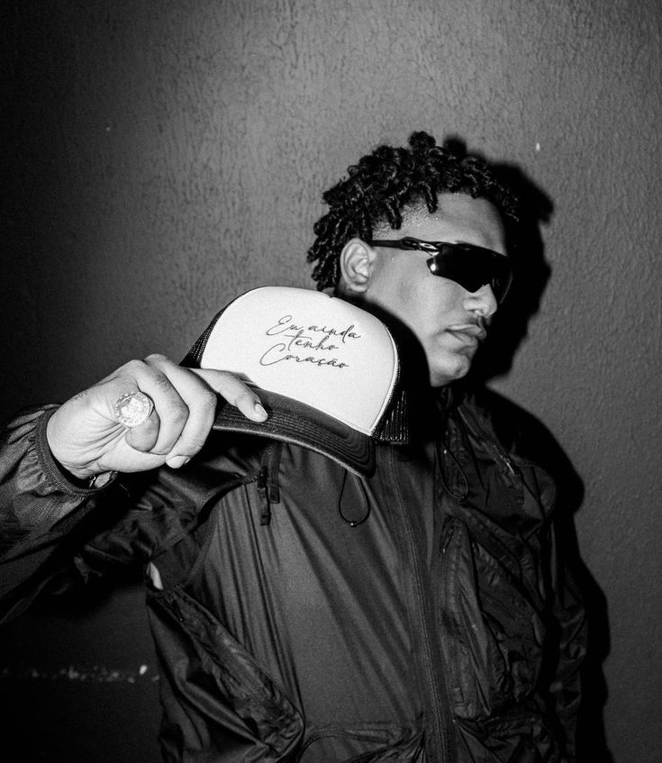
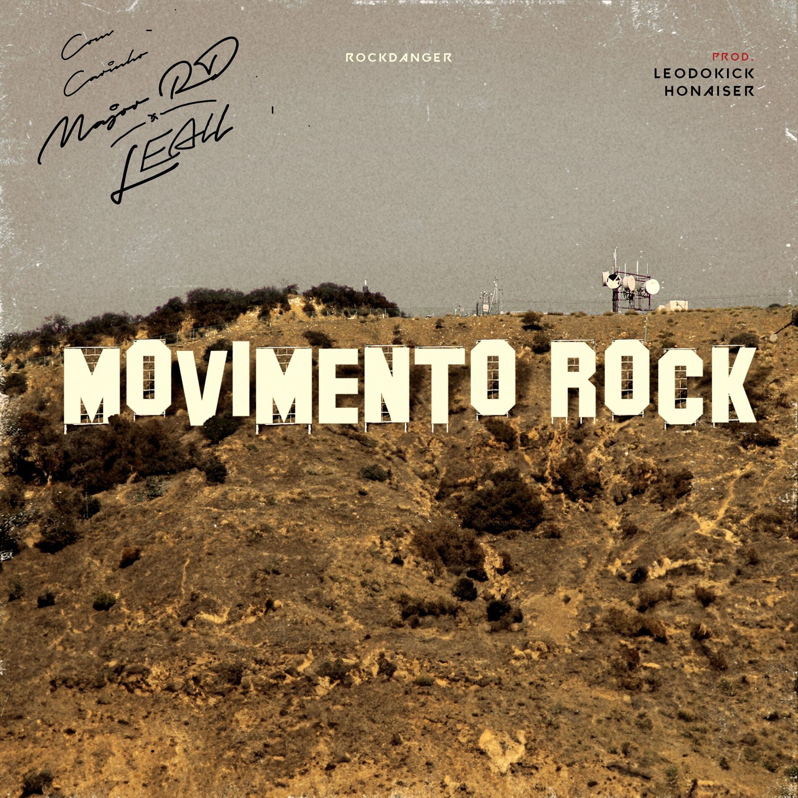
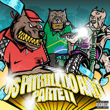
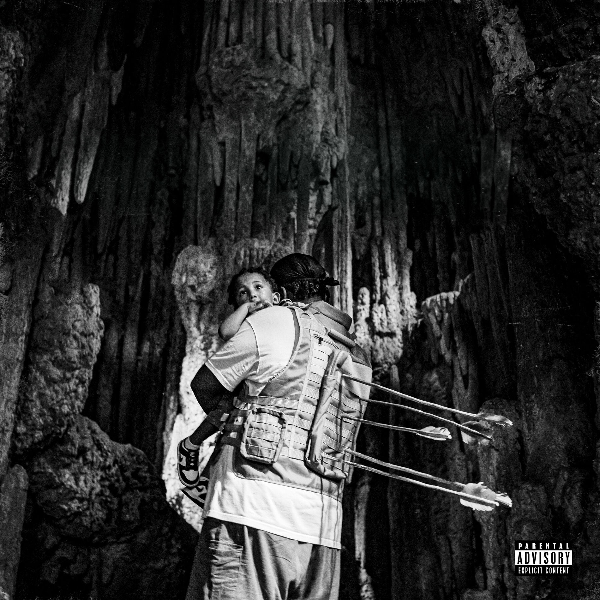
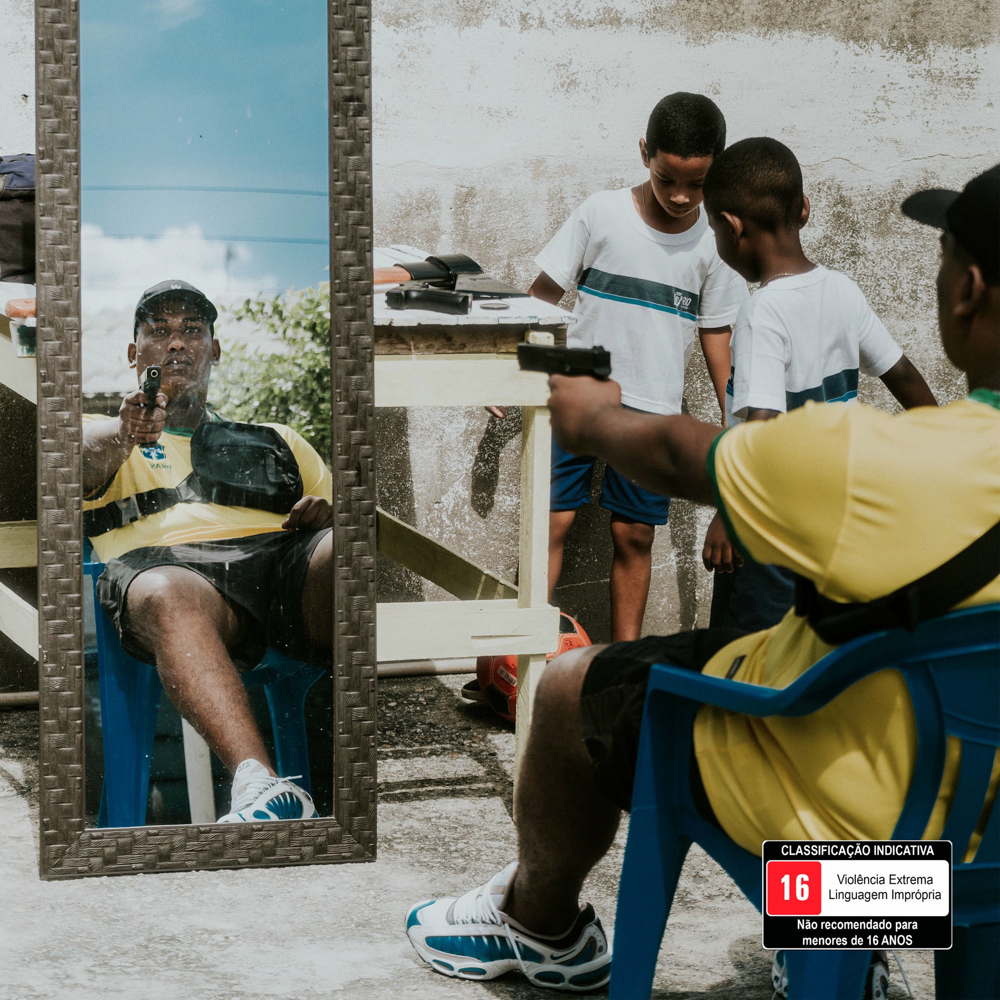
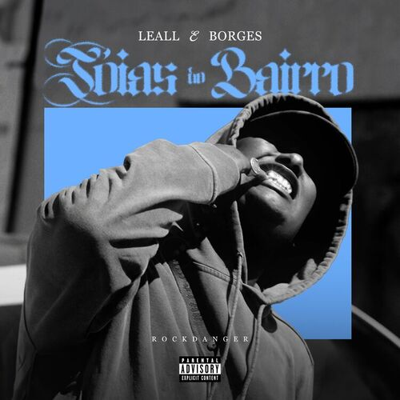
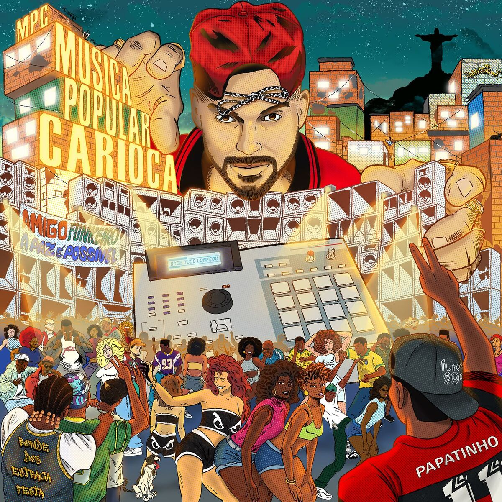

LEALL
Rapper e Escritor
Popular

Movimento Rock

Os Pitbull do Ano Pt.2

Besteiras

Desfile Bélico

Joias do Bairro

PIXADÃO NO BAILE
Discografia
Eu Ainda Tenho Coração
Album · 2023
Esculpido a Machado
Album · 2021
Sobre
Nascido e criado em Marechal Hermes, Zona Norte do Rio de Janeiro, LEALL começou sua carreira escrevendo versos sobre o cotidiano de um jovem negro. Lançou seu primeiro single oficial “Criminal Influencer” em maio de 2019, e passou a ser reconhecido no cenário em junho do mesmo ano com o lançamento de “Cachorrada” que foi um marco no underground carioca, sendo um dos primeiros sucessos do grime no Brasil.